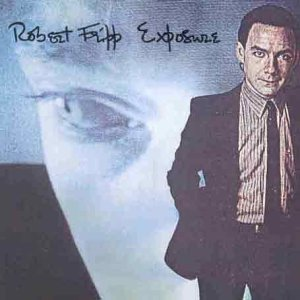
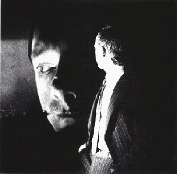
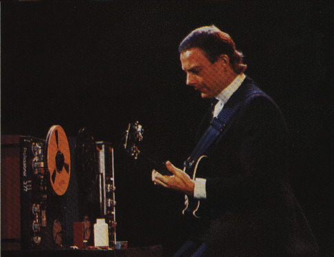
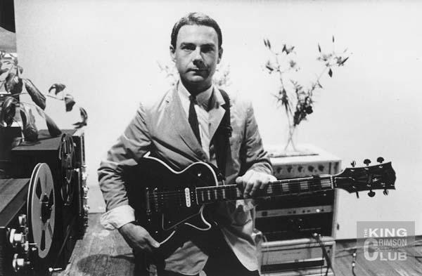

Exposure
Exposure
|
|
|

Exposure (Exposición) Editado originalmente en 1979
El primer álbum de Fripp como solista, resultado de ensayos y grabaciones entre 1977 y 1979. Fue concebido como parte de una trilogía junto al álbum "Sacred songs" de Daryl Hall y al segundo álbum de Peter Gabriel, en los que Fripp participó como músico y como productor. La demora en la edición del disco de Hall (la discográfica lo definió como "raro" y no acorde al público de "su" artista; finalmente se editó en 1980, después de "Exposure"), y la demora en la realización del mismo album "Exposure" por inconvenientes contractuales (ver nota 1 más abajo), hicieron que Fripp lo comenzara a considerar como el primer paso de su propia trilogía. Además de Hall y Gabriel (ambos aportaron voz y piano), en este disco hay otros importantes músicos invitados, como Peter Hammill y Terre Roche en voces; Tony Levin en bajo (quien después formaría parte de KC); Phil Collins (de Genesis), Narada Michael Walden y Jerry Marotta en percusión; Brian Eno en sintetizador; Barry Andrews en órgano (quien después formaría parte de The League of Gentlemen); y Sid McGinniss en guitarra. En ensayos colaboró John Wetton en bajo (ver nota 2). Fripp expone brillantemente toda la variedad de estilos musicales en los que estaba sondeando: Breathless es bien crimsoniano (un power-trio en el estilo del tema Red del '74), Urban landscape y los Water music son frippertrónicos, hay rocks duros (Disengage, NY3, I may not have had enough of me...), un soul (North star), una hermosa balada (Mary), un extraño blues (Chicago) y hasta un rock and roll (You burn me up...), por supuesto con el toque frippeano. La mayoría de los temas están "embebidos" en frippertronics grabados en vivo durante 1977 y 1978, lo que le dá unidad al album. Varias pistas fueron compuestas por Fripp con alguno de los músicos invitados, y se incluyen versiones de los temas Here comes the flood y Exposure, del primer y segundo disco de Gabriel respectivamente. En algunas partes Fripp incorpora voces grabadas de John Bennett (fundador de la escuela filosófica seguidora de George Gurdjieff, donde Fripp estuvo internado años antes), por ejemplo la frase "It is impossible to achieve the aim whitout suffering" (Es imposible alcanzar el objetivo sin sufrimiento) en varias partes del tema Exposure. Joanna Walton (pareja de Fripp en ese momento) compuso las letras de los temas en los que aparece como coautora.
Nota 1: en un principio el disco se editaría con la mayoría de los temas cantados por Daryl Hall (incluso ya se habían grabado así), pero hubo problemas contractuales presentados por la compañía discográfica a la que estaba ligado Hall, que impedían su aparición como figura prominente en discos que no fueran propios, y permitió que cantara solo en dos canciones. A partir de este hecho Fripp llamó a Hammill y Roche para grabar las voces de algunos temas. En 2006 Fripp editó el album como doble CD, con la versión original de 1979 como CD 1, y otra remixada en 1985 en el CD 2; en este segundo disco, con bonus tracks, están incluídos aquellos temas con voz de Hall que no pudieron editarse en el album original (Disengage, Chicago, Mary, Exposure, y NY3, en este caso llamado New York New York New York y con letra diferente), y hay versiones alternativas de otras canciones. Nota 2: desde el sitio DGM pueden bajarse registros de ensayos instrumentales:
 Nota 3: en cierta forma este album puede considerarse conceptual. En una entrevista de 1981 Fripp dijo que "Exposure" era como una autobiografía musical, ya que mostraba su día a día y diversos aspectos de su vida: estar soñando y que suene el teléfono (Preface), discutir argumentos con su pareja (You burn me up..., letra de Fripp sobre su relación con Joanna), vivir el amor (North star y Chicago son canciones de amor con letra de Joanna), salir apresurado para hacer la tarea (Breathless), recibir una llamada de la madre con regaños o instrucciones (en Disengage están incorporadas frases grabadas de la madre de Fripp sobre hábitos de limpieza; para Fripp este tema es una versión rock del libro "Schizophrenia Madness in the Family", "Esquizofrenia y locura en la familia", el cual afirma que la familia es cuna de la mayoría de los casos de esquizofrenia; en relación a esto también están las voces de NY3, una escandalosa y terrorífica discusión de una pareja neoyorquina con su hija adolescente embarazada, familia vecina de Fripp cuando vivía en Nueva York), y finalmente, al cabo de la jornada (y del album, con Postsript) volver a la calma, ir a dormir y entrar de nuevo en los sueños. El tema Exposure es considerado por Fripp como una exposición sicológica. Y no podía dejar de lado el aspecto del desarrollo interior, representado por los temas frippertrónicos puros y las voces de Bennett con conceptos como "es imposible lograr la meta sin sufrimiento" y "la meta es la libertad, consciente y verdadera". Las voces incorporadas las grabó Fripp con su pequeño grabador de casets.
  Fripp y su frippertronics
|